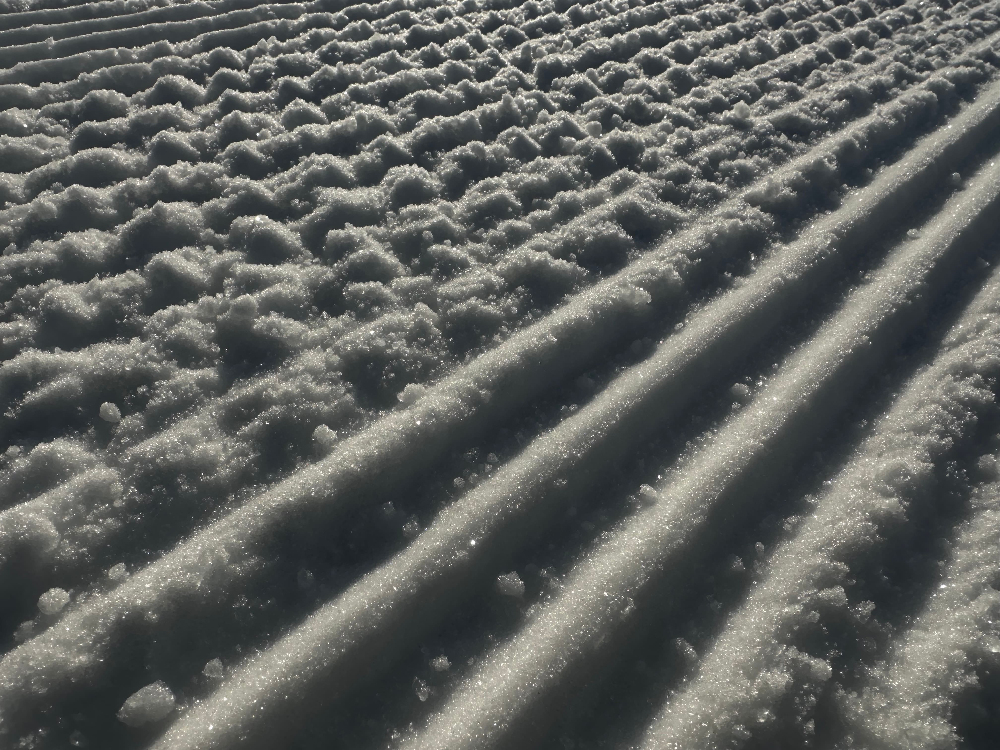

Last updated March 2026 · Written by Colin and Livi, Levi, Finnish Lapland
Lapland cold is not ski resort cold. January and February regularly hit −20°C to −25°C. The right clothing makes this manageable and beautiful. The wrong clothing makes it dangerous and miserable. The system below works.
Your core stays warm through layers. Your extremities lose heat fastest and are the hardest to recover once cold. At −20°C, inadequate gloves or boots are the most common reason a Lapland trip becomes uncomfortable or unsafe. This section matters more than any other.
Most Lapland activity operators provide specialist outer clothing as part of their package. You do not need to buy all of this. Here's a general guide — always confirm with your specific operator.
"Static activities at night are the coldest situations you'll face. Ice fishing at −20°C, standing watching aurora at midnight — your body generates no heat. This is when your kit matters most."
| Item | Priority | Notes |
|---|---|---|
| Merino wool base layer top | Must bring | Non-negotiable. Mid-weight 200–260gsm. 2–3 sets for a week. |
| Merino wool base layer leggings | Must bring | Non-negotiable. Same material rule. |
| Merino wool socks | Must bring | Thick. 3–4 pairs minimum. |
| Winter boots rated −30°C or lower | Must bring | Check the label. Fashion snow boots are not enough. |
| Arctic mittens rated −30°C | Must bring | Not ski gloves. Proper Arctic mittens. |
| Wool or fleece hat (covers ears) | Must bring | Full ear coverage. Not a beanie with a narrow band. |
| Neck gaiter or buff | Must bring | Covers the gap between hat and collar. |
| Liner gloves | Must bring | Thin merino or performance. Worn under mittens. |
| Mid-layer fleece or down jacket | Must bring | Between base and outer. Essential for non-activity outdoor time. |
| Lip balm (SPF) | Must bring | Arctic air is extremely drying. Use daily. |
| Face moisturiser | Must bring | Same reason. SPF version useful for March onwards. |
| Outer waterproof jacket | Check operator | Many operators provide. You need your own for between-activity time. |
| Waterproof trousers | Check operator | Same — operators often provide overalls. |
| Ski boots | Hire at resort | Available to hire at all resorts. No need to travel with them. |
| Skis / snowboard | Hire at resort | Hire is high quality. Not worth the travel hassle. |
| Ski helmet | Hire or bring | Available to hire. Worth bringing your own if you have a good fit. |
| Ski goggles | Hire or bring | Available to hire. Bringing your own is lighter and preferred fit. |
| Boot ice cleats | Recommended | Slip-on crampons for icy pavements. Small and very useful. |
| Balaclava / face mask | Recommended | For below −20°C or snowmobile. Optional but useful. |
| Sunglasses | Recommended | Essential in March–April. Polarised preferred. |
| Camera battery spares | Recommended | Batteries fail fast in cold. Bring 2+ and keep warm. |
| Power bank (kept warm) | Recommended | Same issue as camera. Keep inside jacket. |
| Thermal insoles | Optional | Add warmth to borderline boots. Worth packing just in case. |
| Hand warmers | Optional | Chemical or rechargeable. Good backup for very cold days. |
Now you know what to pack — tell us where you're flying from, who you're with and what matters most. We'll give you a personalised top 3 with honest rationale and real flight routes.
Start the trip builder →